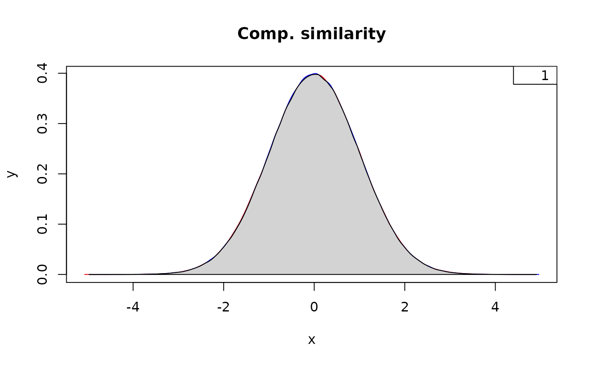
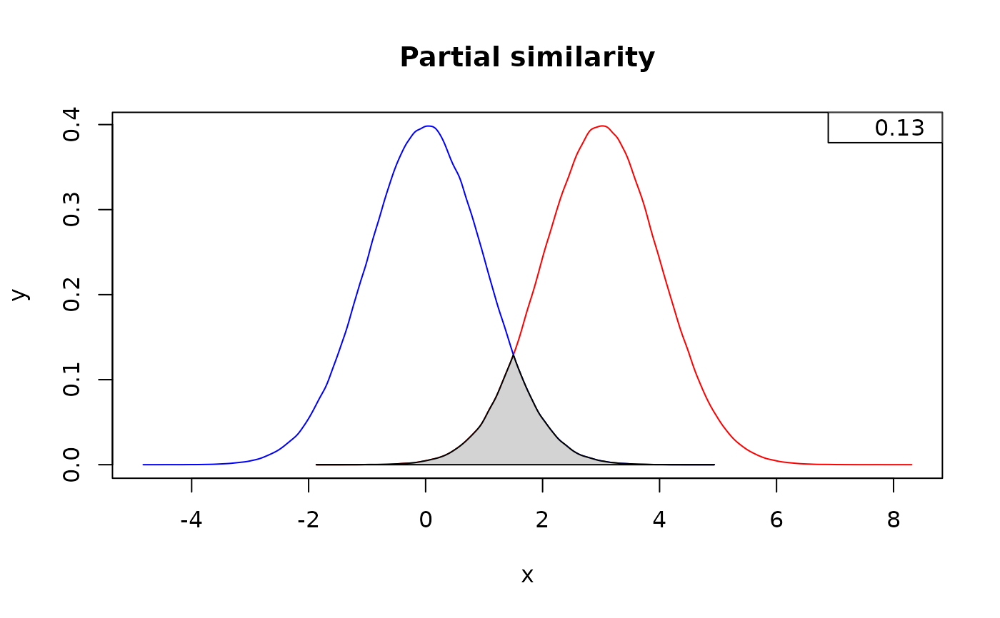
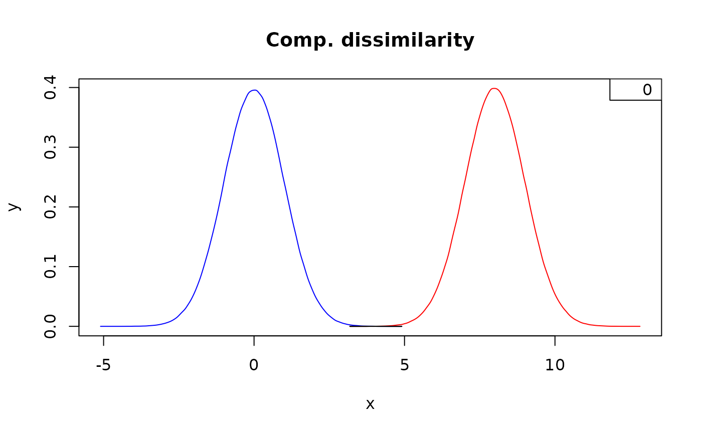

Calculate the Intersection Between Two Densities
Arguments
- d1, d2
Either two vectors of empirical (i.e., MCMC-produced) values OR a
data.frame/matrixwith columns x and y for values fitted to a density from which to calculate areas. IfrawDatais set toTRUEin any instance, the data must be placed in vectors and not multidimensional objects.- splits
A numerical argument controling the number of subdivisions of the intersection area for numerical integration
- rawData
Are d1 and/or d2 raw data for which a density should be calculated? A vector of length two containing logical values indicating whenther any of the arguments d1 or d2 are raw data or whether the user is inputing already calculated densities (e.g., the output from the density, curve, or dDIST functions, or any two-dimension object with x and y values)
- plot
Should a plot be produced?
- x_limit
Whether to define the xlim form the min-max of the combined density x-values
- colors
A vector of three colors, namely, color of the
d1density (e.g., the prior), color of thed2density e.g., the posterior), and color of the intersection.- ...
Further arguments to pass to the graphical functions such as
linesandplotinternally (e.g.,main,xlim,ylim,xlab,ylab, etc.).
Value
A numeric vector with the value of the intersection between two densities. As a side effect, a plot is produced to an active (or new) graphical device.
Details
Similarity is measured as the overlapping portion between two densities. It has a value between 0 and 1. The values of the vector rawData determine the behavior of the function and therefore attention must be paid to their consistence with the nature of arguments d1 and d2. Despite the function was designed in order to allow to quantify similarity between the posterior and the prior, this can be used to quantify any overlap between two given densities and for any other purpose.
Examples
# \donttest{
# Set seed and colors to use in plots in the order: Prior, posterior, and intersection
set.seed(1985)
colors <- c("red", "blue", "lightgray")
# Similarity between two identical distributions
below <- measureSimil(d1 = rnorm(1000000, mean = 0, 1),
d2 = rnorm(1000000, mean = 0, 1),
main = "Comp. similarity",
colors = colors)
legend(x = "topright", legend = round(below, digits = 2))

# Similarity in two distributions partially overlapping
below <- measureSimil(d1 = rnorm(1000000, mean = 3, 1),
d2 = rnorm(1000000, mean = 0, 1),
main = "Partial similarity",
colors = colors)
legend(x = "topright", legend = round(below, digits = 2))

# Similarity in two completely-different distributions
below <- measureSimil(d1 = rnorm(1000000, mean = 8, 1),
d2 = rnorm(1000000, mean = 0, 1),
main = "Comp. dissimilarity",
colors = colors)
legend(x = "topright", legend = round(below, digits = 2))

# Don't plot, just return the intersection
measureSimil(d1 = rnorm(1000000, mean = 3, 1),
d2 = rnorm(1000000, mean = 0, 1),
plot = FALSE)
#> [1] 0.1336534
# }